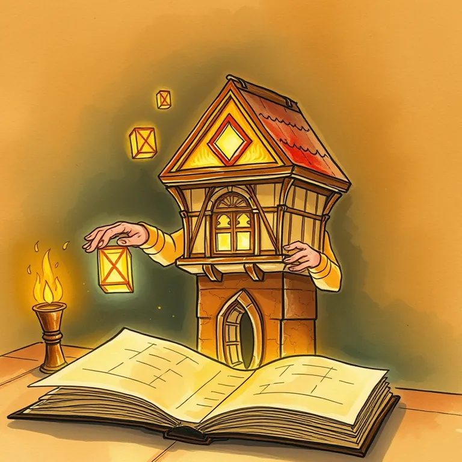

v0

The facade looked finished. Someone still had to live in the walls and debug the plumbing.
v0 is best used for generating a working user interface from a text description, as a fast starting point for a real coded project. A tinkerer needing a working facade quickly, before the deeper plumbing gets built, starts here. It lands at #38 of 51 on Solos Gems (5.65/10) for ui generation.
The facade looked entirely finished from the street. Someone still had to live in the walls afterward and debug the plumbing that made the front door actually open.
- Value for price4.5/10
- Capability8.5/10
- Ease of use6.0/10
- Trial safety6.0/10

Generates genuinely usable UI code from a plain description quickly.
Image from v0.dev. We cased the joint, we didn't move in and run the whole quest line.Best used for
Generating a working user interface from a text description, as a fast starting point for a real coded project.
How it helps the realm
A tinkerer needing a working facade quickly, before the deeper plumbing gets built, starts here.
Boons
- Generates genuinely usable UI code from a plain description quickly.
- Good starting point that plugs into a real coding workflow afterward.
- Iterating on a generated design is fast compared to building it by hand from scratch.
Curses
- The generated code still needs a developer to properly wire up real functionality behind it.
- Complex, unusual interface requirements can exceed what quick generation handles well.
Common questions
Does it produce a finished app, or just the interface?
Primarily the interface and front-end code; real backend functionality still needs building.
Do I need coding knowledge to use the output?
To meaningfully extend and connect it to real functionality, yes.
Can I keep iterating on the design after the first generation?
Yes, you can refine and regenerate parts of the interface through further prompts.